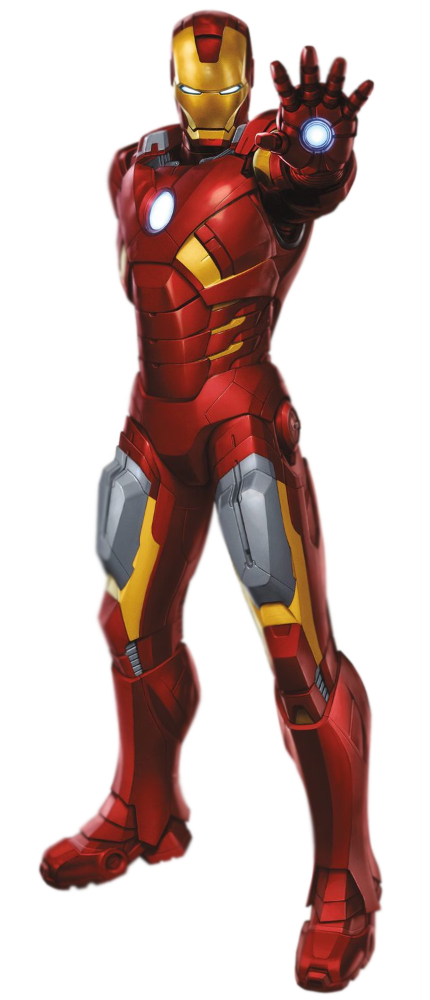

钢铁侠
Iron Man
托尼·斯塔克（Tony Stark）即钢铁侠（Iron Man），全名安东尼·爱德华·“托尼”·斯塔克（Anthony Edward “Tony” Stark），是斯塔克工业（STARK INDUSTRIES）的董事长，因一场阴谋绑架中，胸部遭弹片穿入，生命危在旦夕，为了挽救自己的生命，在同被绑架的物理学家殷森（Yin Sen）的协助下托尼造出了防止弹片侵入心脏的方舟反应炉从而逃过一劫，后又用方舟反应炉作为能量运转的来源，暗中制造了一套高科技战衣杀出重围后逃脱，后参与创立复仇者联盟。